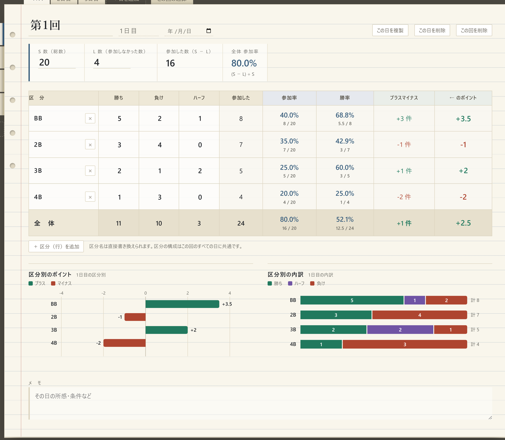
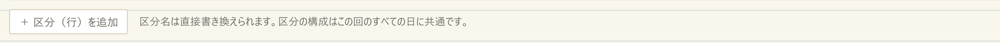
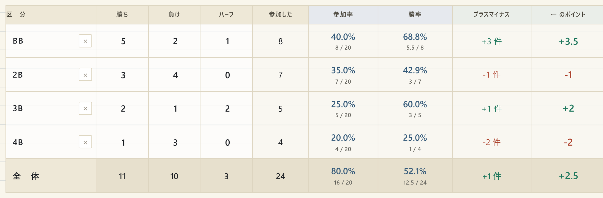
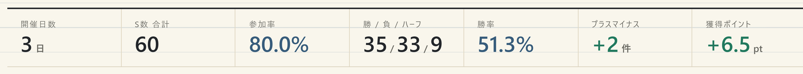
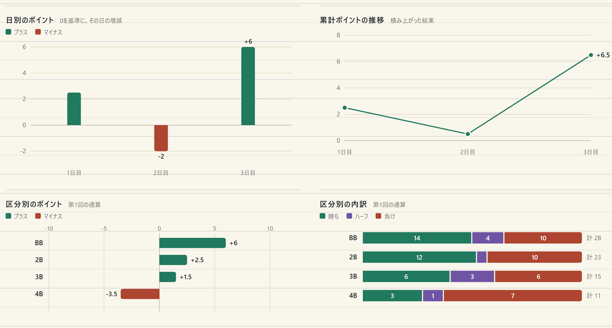
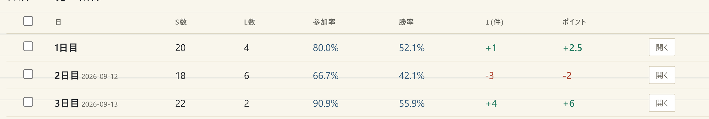
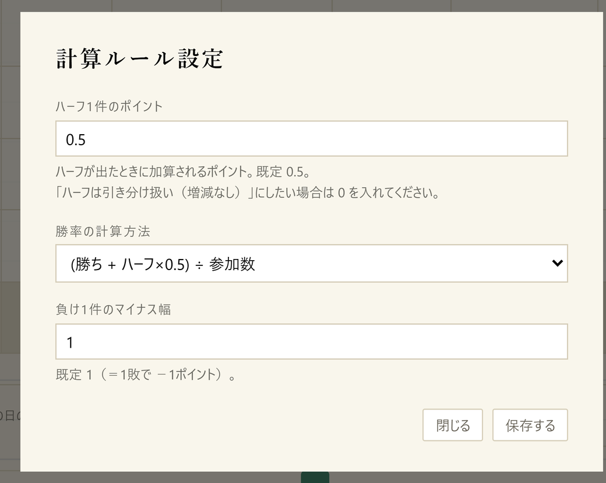
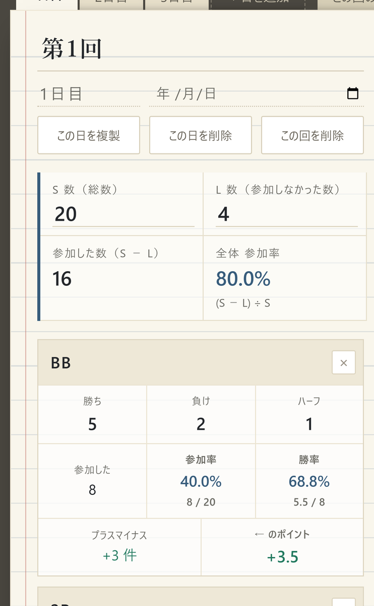
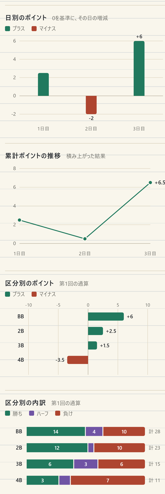
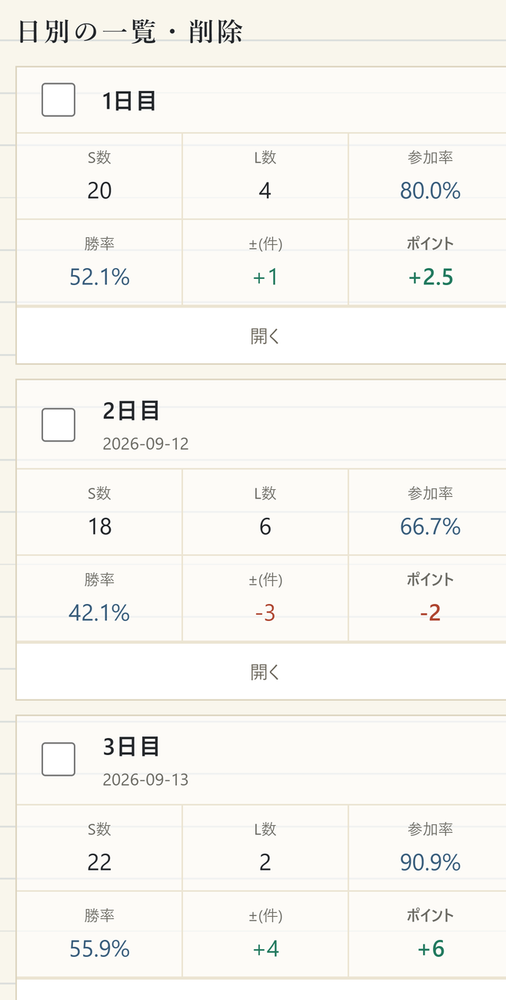

OPERATION MANUAL
戦績ノート 説明書
開催回ごと・日ごとに戦績を記録し、参加率・勝率・プラスマイナス・ポイントを自動で計算するツールです。 入力した数字はグラフにも自動で反映されます。この説明書では、入力のしかたから保存の注意点までをひと通り説明します。
01このツールについて
表計算ソフトで作っていた戦績表を、ブラウザ上で入力できるようにしたものです。 入力するのは「勝ち」「負け」「ハーフ」の件数と「S数」「L数」だけで、 それ以外の項目はすべて自動計算されます。
できること
- 第1回・第2回…と開催回ごとに記録を分けて保存する
- 1つの回の中を1日目・2日目…と日ごとに分けて保存する
- 参加率・勝率・プラスマイナス・ポイントと「全体」行の自動計算
- 区分（行）の名前の変更と、行の追加・削除
- 回の通算（合計）と、日ごとの推移をグラフで確認する
- 不要になった日を選んでまとめて削除する
- バックアップの保存と読み込み、CSV書き出し、印刷・PDF化
02開き方
index.htmlをダブルクリックします。既定のブラウザで開きます。- 初めて開いたときは「第1回／1日目」の空のページが用意されています。そのまま入力を始められます。
- 2回目以降は、前回入力した内容がそのまま表示されます。保存ボタンを押す必要はありません。
この説明書は、画面左下の「使い方（説明書）」ボタンからいつでも開けます。
よく使う場合は、開いた状態でブラウザのブックマークに登録しておくと便利です。 スマートフォンでの開き方は「14. スマートフォンで使う」をご覧ください。
03画面の構成
画面は大きく3つに分かれています。
| 場所 | 役割 |
|---|---|
| 左のリスト | 開催回（第1回・第2回…）の一覧です。クリックするとその回に切り替わります。下にはバックアップなどの操作ボタンが並びます。 |
| 上のタブ | 選んでいる回の中の日（1日目・2日目…）です。いちばん右の「この回の通算」で合計ページに切り替わります。 |
| 中央のページ | 入力欄と集計表、グラフが並ぶ本体です。 |

041日分を入力する
1日分のページで入力するのは、次の5種類の数字だけです。
| 欄 | 入力する内容 |
|---|---|
| S数（総数） | その日の全体の数です。参加率の分母になります。 |
| L数 | 参加しなかった数です。S数からL数を引いた数が「参加した数」になります。 |
| 勝ち | 区分ごとの勝ちの件数です。 |
| 負け | 区分ごとの負けの件数です。 |
| ハーフ | 区分ごとのハーフの件数です。既定では0.5ポイントとして計算します。 |
入力のコツ
- 数字の欄で Enterキー または ↑↓キー を押すと、次の欄へ移動します。マウスに持ち替えずに続けて入力できます。
- 区分名（BB・2B・3B・4B）は直接書き換えられます。別の呼び方を使っている場合は変更してください。変更した名前はその日のページに保存されます。
- 日付欄は空のままでもかまいません。入れておくと、通算ページの一覧に表示されます。
- ページ下部の「メモ」欄には、その日の条件や気づいたことを自由に書けます。
05区分（行）を増やす・減らす
区分は初期状態で BB・2B・3B・4B の4つですが、名前の変更も、行そのものの追加・削除もできます。
名前を変える
区分名は数字の欄と同じように、クリックしてそのまま書き換えられます。 入力欄にマウスを乗せると下線が表示されるので、編集できる場所であることが分かります。
行を追加する
集計表のすぐ下にある「＋ 区分（行）を追加」を押すと、行がひとつ増えます。

行を削除する
区分名の右にある「×」を押すと、その行を削除します。 このボタンは行にマウスを乗せたときに表示されます（スマートフォンでは常に表示されます）。

区分は最低1つ必要です。また、増やせるのは12までです。
06自動で計算される項目
色の付いた欄はすべて自動計算です。計算のしかたは次のとおりです。
| 項目 | 計算 | 補足 |
|---|---|---|
| 参加した | 勝ち ＋ 負け ＋ ハーフ | その区分で参加した件数です。 |
| 参加率（区分） | 参加した ÷ S数 | 欄の下に「8 / 20」のように内訳も表示します。 |
| 参加率（全体） | （S数 − L数）÷ S数 | 全体行だけ計算が異なります。区分をまたいで参加した分を重複して数えないためです。 |
| 勝率 | （勝ち ＋ ハーフ×0.5）÷ 参加した | 既定の計算方法です。「11. 計算ルールを変える」で別の方法に変更できます。 |
| プラスマイナス | 勝ち − 負け | 件数での増減です。ハーフは数えません。 |
| ← のポイント | 勝ち×1 − 負け×1 ＋ ハーフ×0.5 | 左のプラスマイナスを、ハーフを含めたポイントに直したものです。 |
| 全体行 | 各区分の合計 | 参加率のみ上記のとおり別計算です。 |
プラスの値は緑、マイナスの値は朱色で表示されます。0のときは灰色です。
07回と日を増やす
日を追加する
上のタブの「＋日を追加」を押すと、次の日のページが増えます。日の名前（1日目・2日目…）は自由に書き換えられます。
同じ内容の日を複製する
「この日を複製」を押すと、いま開いている日と同じ数字を持つ新しい日が作られます。前日とほぼ同じ条件のときに便利です。
回を追加する
左のリストの下にある「＋ 新しい回を追加」を押すと、第2回・第3回…と新しい回が作られます。回の名前は見出し部分をクリックして書き換えられます。
08通算ページを見る
上のタブのいちばん右「この回の通算」を押すと、その回の全日分を合計したページに切り替わります。 上段には主要な数値がまとめて並びます。

その下には区分別の集計表が続き、さらに下にグラフ、いちばん下に日別の一覧があります。 集計表の見方は1日分のページと同じです。
09グラフの見方
グラフは入力した数字から自動で作られます。数字を1つ書き換えると、その場で描き直されます。

| グラフ | 読み取れること |
|---|---|
| 日別のポイント | その日ごとの増減です。0の線より上がプラス、下がマイナスです。いちばん良かった日と悪かった日にだけ数字を表示しています。 |
| 累計ポイントの推移 | 初日から積み上げた結果です。右端の数字が現在の通算ポイントです。 |
| 区分別のポイント | どの区分で稼げていて、どの区分が足を引っ張っているかが分かります。 |
| 区分別の内訳 | 参加した件数を100％として、勝ち・ハーフ・負けの割合を示します。右端に参加した合計件数を添えています。 |
色の決まり
勝ち（プラス） ハーフ 負け（マイナス）
この3色は、色の見え方に違いがある方でも区別できるか、また紙色に対して十分な濃さがあるかを検証したうえで選んでいます。 色だけに頼らずに済むよう、グラフには必ず凡例を付け、同じ数字を表でも確認できるようにしています。
パソコンでは、棒や点にマウスを乗せるとその内訳が表示されます。
1日分のページのグラフ
各日のページにも、その日だけの「区分別のポイント」と「区分別の内訳」の2つが表示されます。
10特定の日を選んで削除する
通算ページのいちばん下に「日別の一覧・削除」があります。

- 削除したい日の左端にチェックを入れます。複数選べます。見出しのチェックボックス、または「すべて選択／解除」で一括選択もできます。
- 「選択した日を削除」を押します。
- 確認の画面に削除対象の日名が表示されます。内容を確かめて「OK」を押すと削除されます。
いま開いている日を消したいだけであれば、その日のページにある「この日を削除」でも削除できます。 回ごとまとめて消す場合は「この回を削除」です。
11計算ルールを変える
左下の「計算ルール設定」で、ハーフの扱いと勝率の計算方法を変更できます。変更はすべての回・すべての日にまとめて適用されます。

| 設定 | 内容 |
|---|---|
| ハーフ1件のポイント | 既定は 0.5 です。ハーフを引き分け扱い（増減なし）にしたい場合は 0 を入れてください。 |
| 勝率の計算方法 |
次の3つから選べます。 ① （勝ち ＋ ハーフ×0.5）÷ 参加数（既定）② 勝ち ÷（勝ち ＋ 負け） ＝ ハーフを計算から除く③ 勝ち ÷ 参加数 ＝ ハーフを負け扱いにする
|
| 負け1件のマイナス幅 | 既定は 1（1敗で −1ポイント）です。 |
いま適用されているルールは、通算ページのいちばん下にも文章で表示されます。
12保存とバックアップ
保存は自動です
入力した内容は、その都度ブラウザに自動保存されます。保存ボタンを押す必要はなく、ページを閉じても残ります。
知っておいていただきたい注意点
| 状況 | どうなるか |
|---|---|
| 別のパソコンで開いた | データは引き継がれません。端末ごとに別々の内容になります。 |
| 同じ端末で別のブラウザを使った | 同じく引き継がれません。いつも同じブラウザで開いてください。 |
| シークレットウィンドウで開いた | ウィンドウを閉じた時点でデータが消えます。通常のウィンドウで使ってください。 |
| ブラウザの閲覧履歴・サイトデータを削除した | 戦績ノートのデータも一緒に消えます。 |
| index.html を別のフォルダへ移動した | 保存場所が変わるため、以前のデータが表示されないことがあります。移動する前にバックアップを取ってください。 |
バックアップの取り方・戻し方
- 左下の「バックアップ保存(JSON)」を押すと、
戦績ノート_日付.jsonというファイルがダウンロードされます。すべての回・すべての日が1つのファイルに入っています。 - 戻すときは「バックアップ読込」を押し、そのファイルを選びます。
- 読み込むと、いま入っているデータはすべて置き換わります。確認の画面が出ますので、内容を確かめてから実行してください。
このJSONファイルは、別のパソコンへ記録を移すときにも使えます。
13CSVと印刷
CSV書き出し
「CSV書き出し」を押すと、すべての回・日・区分を1行ずつ並べたCSVファイルが保存されます。 Excelで開いて独自に集計したい場合に使ってください。全体行も含まれます。 参加率と勝率は0〜1の小数で書き出されます（例：0.8000 ＝ 80.0％）。
印刷・PDF
「印刷 / PDF」を押すと印刷画面が開きます。表示中のページ（1日分または通算）が印刷されます。 左のリストやタブ、削除用のチェックボックスなどの操作部分は印刷されません。 印刷先に「PDFとして保存」を選べば、そのままPDFファイルとして残せます。
14スマートフォンで使う
画面の幅に合わせて表示が自動で切り替わります。スマートフォンでは、横に長い集計表が 1区分ずつのカードに組み替えられ、横スクロールせずに読めます。



使い方の違い
- 開催回の一覧とボタン類、日のタブは横スクロールになります。指で左右に払って切り替えてください。
- 数字の欄をタップすると数字キーボードが出ます。
- 一覧の見出しのチェックボックスは表示されないため、一括選択は「すべて選択／解除」ボタンを使ってください。
- グラフにマウスを乗せたときの吹き出しは、タッチ操作では表示されません。数字は表でご確認ください。
スマートフォンで開くには
index.html をメール等でスマートフォンに送るか、クラウドストレージに置いて開いてください。
ホーム画面に追加しておくと、アプリのように起動できます。
なお、パソコンとスマートフォンでデータは共有されません。両方で使う場合は、
「バックアップ保存(JSON)」で書き出したファイルを受け渡ししてください。
15困ったときは
入力した内容が消えてしまいました。
ブラウザの閲覧履歴・サイトデータを削除した、シークレットウィンドウで使っていた、別のブラウザで開いた、のいずれかが考えられます。バックアップのJSONファイルがあれば「バックアップ読込」で復元できます。
参加率が100％を超えます。
S数より参加した件数が多い状態です。S数の入力漏れ、または勝ち・負け・ハーフの件数に誤りがないかご確認ください。
全体行の参加率だけ、他の行と計算が違って見えます。
全体行は （S数 − L数）÷ S数 で計算しています。各区分の参加率を足すと、同じ回に複数の区分で参加した分を二重に数えてしまうためです。
ハーフを勝ちにも負けにも数えたくありません。
「計算ルール設定」でハーフのポイントを 0 にし、勝率の計算方法を「勝ち ÷（勝ち ＋ 負け）」に変更してください。ハーフは件数として記録に残りますが、ポイントと勝率には影響しなくなります。
グラフが表示されません。
勝ち・負け・ハーフがすべて0の場合、グラフには何も描かれません。数字を入力すると表示されます。それでも表示されない場合は、ブラウザを最新の状態に更新してからページを再読み込みしてください。
区分を4つより増やしたいです。／使わない区分を消したいです。
集計表の下の「＋ 区分（行）を追加」で増やせます（12まで）。減らすときは区分名の右の「×」を押してください。名前もその場で書き換えられます。詳しくは「05. 区分（行）を増やす・減らす」をご覧ください。
他の人と同じ記録を共有したいです。
「バックアップ保存(JSON)」で書き出したファイルを渡し、相手側で「バックアップ読込」を実行してください。なお読み込むと相手側の既存データは置き換わります。常に共有したい場合は、サーバー上で動く形への変更が必要です。